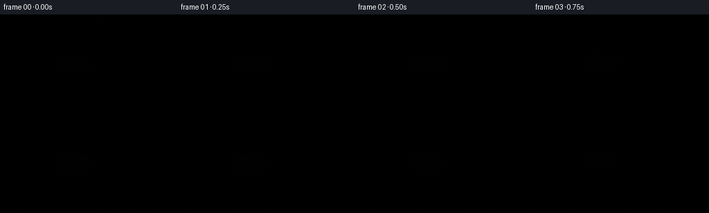
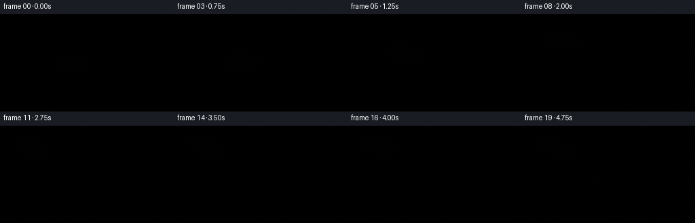

CODING AGENTS AS PIXEL WORLD MODELS
traex/DeepSeek-V4.1-Flash · mechanics_0001
点击播放 · 原生 RGB 像素
逐轮保存的候选
回放视频、检查图与代码变化。
每份候选均可单独播放。实际图片检查记录在下方工具轨迹中。
候选 01播放与检查图
点击播放 · 原生 RGB 像素


展开代码变化
--- 上一保存版本
+++ 本次保存版本
@@ -0,0 +1,843 @@
+from pathlib import Path
+import math
+
+import numpy as np
+from PIL import Image, ImageDraw, ImageFilter, ImageFont
+
+from artifact_io import save
+
+
+WIDTH = 256
+HEIGHT = 144
+FPS = 4
+FRAME_COUNT = 20
+SS = 3
+RW = WIDTH * SS
+RH = HEIGHT * SS
+
+
+def clamp(value, low=0.0, high=1.0):
+ return np.clip(value, low, high)
+
+
+def smoothstep(edge0, edge1, value):
+ x = clamp((value - edge0) / (edge1 - edge0))
+ return x * x * (3.0 - 2.0 * x)
+
+
+def mix(a, b, amount):
+ return a + (b - a) * amount
+
+
+def rgb(values):
+ return tuple(int(round(v)) for v in values)
+
+
+def value_noise(width, height, cells_x, cells_y, seed):
+ rng = np.random.default_rng(seed)
+ coarse = rng.random((cells_y + 1, cells_x + 1)).astype(np.float32)
+ image = Image.fromarray((coarse * 255).astype(np.uint8), mode="L")
+ image = image.resize((width, height), Image.Resampling.BICUBIC)
+ return np.asarray(image, dtype=np.float32) / 255.0
+
+
+def vertical_gradient(top, bottom, width, height):
+ rows = np.linspace(0.0, 1.0, height, dtype=np.float32)[:, None]
+ top = np.asarray(top, dtype=np.float32)
+ bottom = np.asarray(bottom, dtype=np.float32)
+ column = top[None, :] * (1.0 - rows) + bottom[None, :] * rows
+ return np.broadcast_to(column[:, None, :], (height, width, 3)).copy()
+
+
+def rounded_mask(box, radius):
+ mask = Image.new("L", (RW, RH), 0)
+ draw = ImageDraw.Draw(mask)
+ draw.rounded_rectangle(
+ tuple(int(v * SS) for v in box),
+ radius=int(radius * SS),
+ fill=255,
+ )
+ return np.asarray(mask, dtype=np.float32) / 255.0
+
+
+def composite_numpy(base, layer, alpha):
+ alpha = alpha[..., None]
+ return base * (1.0 - alpha) + layer * alpha
+
+
+def station_background(t):
+ yy = np.linspace(0.0, 1.0, RH, dtype=np.float32)[:, None, None]
+ xx = np.linspace(0.0, 1.0, RW, dtype=np.float32)[None, :, None]
+ top = np.array([12, 19, 27], dtype=np.float32)
+ bottom = np.array([28, 33, 37], dtype=np.float32)
+ background = np.broadcast_to(
+ top[None, None, :] * (1.0 - yy) + bottom[None, None, :] * yy,
+ (RH, RW, 3),
+ ).copy()
+
+ warm_pool = np.exp(-(((xx - 0.18) / 0.35) ** 2 + ((yy - 0.82) / 0.27) ** 2))
+ cool_pool = np.exp(-(((xx - 0.64) / 0.39) ** 2 + ((yy - 0.34) / 0.33) ** 2))
+ background += warm_pool * np.array([22, 15, 8], dtype=np.float32)
+ background += cool_pool * np.array([2, 14, 22], dtype=np.float32)
+ background = clamp(background, 0, 255)
+ image = Image.fromarray(background.astype(np.uint8), mode="RGB")
+ draw = ImageDraw.Draw(image, "RGBA")
+
+ # Ceiling ribs and recessed work lights.
+ draw.rectangle((0, 0, RW, int(15 * SS)), fill=(18, 25, 31, 255))
+ for x in (20, 84, 148, 212):
+ draw.rounded_rectangle(
+ (int((x - 9) * SS), int(3 * SS), int((x + 9) * SS), int(10 * SS)),
+ radius=int(2 * SS),
+ fill=(33, 42, 47, 255),
+ outline=(64, 73, 76, 220),
+ width=SS,
+ )
+ draw.rounded_rectangle(
+ (int((x - 5) * SS), int(4 * SS), int((x + 5) * SS), int(7 * SS)),
+ radius=int(1.5 * SS),
+ fill=(178, 185, 173, 170),
+ )
+ draw.line((0, int(15 * SS), RW, int(15 * SS)), fill=(7, 11, 15, 255), width=int(1.5 * SS))
+
+ # Side equipment bays.
+ for side in (0, 1):
+ if side == 0:
+ x0, x1 = 0, 49
+ else:
+ x0, x1 = 207, 256
+ draw.rounded_rectangle(
+ (int(x0 * SS), int(18 * SS), int(x1 * SS), int(126 * SS)),
+ radius=int(3 * SS),
+ fill=(31, 38, 41, 245),
+ outline=(58, 65, 66, 255),
+ width=SS,
+ )
+ draw.line(
+ (int((x0 + (x1 - x0) * 0.56) * SS), int(20 * SS),
+ int((x0 + (x1 - x0) * 0.56) * SS), int(123 * SS)),
+ fill=(16, 22, 26, 220),
+ width=SS,
+ )
+ for y in (34, 51, 69, 88, 107):
+ draw.rounded_rectangle(
+ (int(7 * SS), int(y * SS), int(41 * SS), int((y + 10) * SS)),
+ radius=int(2 * SS),
+ fill=(24, 31, 35, 220),
+ outline=(57, 65, 66, 180),
+ width=SS,
+ )
+ draw.rounded_rectangle(
+ (int(11 * SS), int((y + 2) * SS), int(37 * SS), int((y + 4) * SS)),
+ radius=SS,
+ fill=(58, 72, 72, 150),
+ )
+ for y, color in ((28, (124, 173, 160)), (43, (211, 146, 75)), (78, (102, 151, 175))):
+ draw.ellipse(
+ (int(43 * SS), int(y * SS), int(45.5 * SS), int((y + 2.5) * SS)),
+ fill=(*color, 220),
+ )
+ for y in (31, 58, 85, 111):
+ draw.rounded_rectangle(
+ (int(216 * SS), int(y * SS), int(247 * SS), int((y + 14) * SS)),
+ radius=int(2 * SS),
+ fill=(20, 27, 31, 230),
+ outline=(53, 62, 64, 190),
+ width=SS,
+ )
+ draw.line(
+ (int(220 * SS), int((y + 9) * SS), int(243 * SS), int((y + 9) * SS)),
+ fill=(84, 98, 96, 120),
+ width=SS,
+ )
+
+ # Handrail and loose utility cable.
+ draw.line(
+ (int(51 * SS), int(18 * SS), int(51 * SS), int(127 * SS)),
+ fill=(75, 83, 83, 255),
+ width=int(2 * SS),
+ )
+ draw.line(
+ (int(206 * SS), int(18 * SS), int(206 * SS), int(127 * SS)),
+ fill=(75, 83, 83, 255),
+ width=int(2 * SS),
+ )
+ for y in (28, 62, 99):
+ draw.rounded_rectangle(
+ (int(48 * SS), int(y * SS), int(54 * SS), int((y + 3) * SS)),
+ radius=SS,
+ fill=(118, 125, 121, 230),
+ )
+ draw.rounded_rectangle(
+ (int(203 * SS), int(y * SS), int(209 * SS), int((y + 3) * SS)),
+ radius=SS,
+ fill=(118, 125, 121, 230),
+ )
+
+ draw.line(
+ (int(198 * SS), int(128 * SS), int(190 * SS), int(141 * SS)),
+ fill=(46, 53, 54, 210),
+ width=int(1.5 * SS),
+ )
+ draw.line(
+ (int(54 * SS), int(128 * SS), int(61 * SS), int(141 * SS)),
+ fill=(46, 53, 54, 210),
+ width=int(1.5 * SS),
+ )
+ return image
+
+
+def make_space_view(t):
+ yy, xx = np.mgrid[0:RH, 0:RW].astype(np.float32)
+ yn = yy / RH
+ xn = xx / RW
+ top = np.array([4, 13, 24], dtype=np.float32)
+ bottom = np.array([11, 36, 54], dtype=np.float32)
+ space = top[None, None, :] * (1.0 - yn[:, :, None]) + bottom[None, None, :] * yn[:, :, None]
+
+ # Earth: a shaded sphere with procedural ocean, land, clouds and a lit limb.
+ earth_cx = 0.735 * RW
+ earth_cy = 1.20 * RH
+ earth_r = 0.65 * RH
+ ex = (xx - earth_cx) / earth_r
+ ey = (yy - earth_cy) / earth_r
+ rr = np.sqrt(ex * ex + ey * ey)
+ inside = rr < 1.0
+ nz = np.sqrt(np.maximum(0.0, 1.0 - rr * rr))
+ light = np.array([-0.52, -0.62, 0.59], dtype=np.float32)
+ light /= np.linalg.norm(light)
+ diffuse = clamp(ex * light[0] + ey * light[1] + nz * light[2])
+ ocean = np.stack(
+ (
+ 14.0 + 20.0 * diffuse,
+ 54.0 + 89.0 * diffuse,
+ 82.0 + 111.0 * diffuse,
+ ),
+ axis=-1,
+ )
+ land_n = (
+ 0.58 * value_noise(RW, RH, 10, 7, 31)
+ + 0.28 * value_noise(RW, RH, 27, 17, 32)
+ + 0.14 * value_noise(RW, RH, 62, 38, 33)
+ )
+ cloud_n = (
+ 0.58 * value_noise(RW, RH, 16, 9, 51)
+ + 0.27 * value_noise(RW, RH, 44, 24, 52)
+ + 0.15 * value_noise(RW, RH, 95, 52, 53)
+ )
+ land = smoothstep(0.57, 0.65, land_n)
+ land_color = np.stack(
+ (
+ 58.0 + 28.0 * diffuse,
+ 85.0 + 33.0 * diffuse,
+ 47.0 + 18.0 * diffuse,
+ ),
+ axis=-1,
+ )
+ earth = ocean * (1.0 - land[..., None]) + land_color * land[..., None]
+ cloud = smoothstep(0.61, 0.70, cloud_n) * (0.35 + 0.65 * nz)
+ cloud_color = np.array([213.0, 223.0, 216.0], dtype=np.float32)
+ earth = earth * (1.0 - 0.9 * cloud[..., None]) + cloud_color * (0.9 * cloud[..., None])
+ rim = np.exp(-((rr - 0.975) / 0.022) ** 2) * (0.35 + 0.65 * clamp(diffuse))
+ earth = earth * (1.0 - rim[..., None]) + np.array([80.0, 177.0, 211.0]) * (0.8 * rim[..., None])
+ earth = clamp(earth)
+ space = space * (1.0 - inside[..., None]) + earth * inside[..., None]
+
+ image = Image.fromarray(space.astype(np.uint8), mode="RGB")
+ draw = ImageDraw.Draw(image, "RGBA")
+ rng = np.random.default_rng(1207)
+ for _ in range(150):
+ x = int(rng.integers(int(55 * SS), int(202 * SS)))
+ y = int(rng.integers(int(18 * SS), int(111 * SS)))
+ if y > int(84 * SS) and x > int(128 * SS):
+ continue
+ radius = int(rng.choice([0, 0, 0, 1, 1, 2]))
+ brightness = int(rng.integers(105, 245))
+ alpha = int(rng.integers(70, 210))
+ draw.ellipse(
+ (x - radius, y - radius, x + radius, y + radius),
+ fill=(brightness, min(255, brightness + 7), 255, alpha),
+ )
+ for x, y, r in ((72, 30, 2), (161, 24, 2), (187, 43, 1), (91, 53, 1)):
+ draw.ellipse(
+ ((x - r) * SS, (y - r) * SS, (x + r) * SS, (y + r) * SS),
+ fill=(225, 237, 255, 235),
+ )
+ draw.ellipse(
+ ((x - 5) * SS, (y - 5) * SS, (x + 5) * SS, (y + 5) * SS),
+ fill=(117, 185, 255, 24),
+ )
+ return image
+
+
+def add_window(station, t):
+ draw = ImageDraw.Draw(station, "RGBA")
+ outer = (47, 11, 209, 124)
+ frame_mask = rounded_mask(outer, 29)
+ frame_rgb = vertical_gradient((78, 89, 92), (47, 55, 58), RW, RH)
+ station_np = np.asarray(station, dtype=np.float32)
+ station_np = composite_numpy(station_np, frame_rgb, frame_mask)
+ station = Image.fromarray(station_np.astype(np.uint8), mode="RGB")
+
+ inner = (55, 19, 201, 116)
+ inner_mask = rounded_mask(inner, 23)
+ space = make_space_view(t)
+ station = Image.composite(space, station, Image.fromarray((inner_mask * 255).astype(np.uint8), mode="L"))
+ draw = ImageDraw.Draw(station, "RGBA")
+ draw.rounded_rectangle(
+ tuple(int(v * SS) for v in outer),
+ radius=int(29 * SS),
+ outline=(133, 143, 141, 255),
+ width=int(2.2 * SS),
+ )
+ draw.rounded_rectangle(
+ tuple(int(v * SS) for v in inner),
+ radius=int(23 * SS),
+ outline=(13, 19, 22, 255),
+ width=int(1.4 * SS),
+ )
+ draw.arc(
+ (int(54 * SS), int(18 * SS), int(202 * SS), int(117 * SS)),
+ start=196,
+ end=326,
+ fill=(190, 198, 191, 180),
+ width=int(1.1 * SS),
+ )
+ for x, y in ((58, 24), (198, 24), (58, 111), (198, 111)):
+ draw.ellipse(
+ ((x - 1.4) * SS, (y - 1.4) * SS, (x + 1.4) * SS, (y + 1.4) * SS),
+ fill=(35, 43, 46, 255),
+ outline=(151, 158, 153, 210),
+ width=SS,
+ )
+ # Cool window spill on the nearby frame.
+ glow = Image.new("RGBA", (RW, RH), (0, 0, 0, 0))
+ gd = ImageDraw.Draw(glow)
+ gd.rounded_rectangle(
+ (int(49 * SS), int(13 * SS), int(207 * SS), int(122 * SS)),
+ radius=int(29 * SS),
+ outline=(76, 174, 207, 105),
+ width=int(4 * SS),
+ )
+ glow = glow.filter(ImageFilter.GaussianBlur(5 * SS))
+ station = Image.alpha_composite(station.convert("RGBA"), glow).convert("RGB")
+ return station
+
+
+def load_font(size):
+ path = "/usr/share/fonts/truetype/dejavu/DejaVuSans-Bold.ttf"
+ try:
+ return ImageFont.truetype(path, size)
+ except OSError:
+ return ImageFont.load_default()
+
+
+def draw_jar(t):
+ layer = Image.new("RGBA", (RW, RH), (0, 0, 0, 0))
+ draw = ImageDraw.Draw(layer, "RGBA")
+
+ body_box = (72, 87, 141, 130)
+ body_radius = 10
+ body_mask_img = Image.new("L", (RW, RH), 0)
+ bd = ImageDraw.Draw(body_mask_img)
+ bd.rounded_rectangle(
+ tuple(int(v * SS) for v in body_box),
+ radius=int(body_radius * SS),
+ fill=255,
+ )
+ bd.polygon(
+ (
+ (83 * SS, 77 * SS),
+ (130 * SS, 77 * SS),
+ (139 * SS, 91 * SS),
+ (74 * SS, 91 * SS),
+ ),
+ fill=255,
+ )
+ bd.rounded_rectangle(
+ (86 * SS, 71 * SS, 127 * SS, 86 * SS),
+ radius=int(4 * SS),
+ fill=255,
+ )
+ body_mask = np.asarray(body_mask_img, dtype=np.float32) / 255.0
+
+ glass_rgb = vertical_gradient((104, 70, 42), (51, 38, 29), RW, RH)
+ glass_alpha = np.full((RH, RW, 1), 0.78, dtype=np.float32)
+ jar_np = np.asarray(layer, dtype=np.float32)
+ jar_np = composite_numpy(jar_np, np.concatenate((glass_rgb, np.full((RH, RW, 1), 199.0)), axis=2), body_mask)
+
+ # Peanut butter visible through the glass.
+ pb_mask_img = Image.new("L", (RW, RH), 0)
+ pd = ImageDraw.Draw(pb_mask_img)
+ pd.rounded_rectangle(
+ (77 * SS, 92 * SS, 136 * SS, 127 * SS),
+ radius=int(7 * SS),
+ fill=255,
+ )
+ pb_mask = np.asarray(pb_mask_img, dtype=np.float32) / 255.0
+ pb_rgb = vertical_gradient((188, 111, 46), (104, 57, 25), RW, RH)
+ jar_np = composite_numpy(
+ jar_np,
+ np.concatenate((pb_rgb, np.full((RH, RW, 1), 235.0)), axis=2),
+ pb_mask * 0.95,
+ )
+ layer = Image.fromarray(clamp(jar_np).astype(np.uint8), mode="RGBA")
+ draw = ImageDraw.Draw(layer, "RGBA")
+
+ # Glass highlights along the shoulders and side walls.
+ draw.arc(
+ (76 * SS, 80 * SS, 137 * SS, 103 * SS),
+ start=202,
+ end=326,
+ fill=(221, 208, 174, 150),
+ width=int(1.2 * SS),
+ )
+ draw.line(
+ (79 * SS, 96 * SS, 78 * SS, 123 * SS),
+ fill=(233, 217, 180, 110),
+ width=int(1.3 * SS),
+ )
+ draw.line(
+ (134 * SS, 98 * SS, 135 * SS, 122 * SS),
+ fill=(223, 210, 177, 85),
+ width=int(1.6 * SS),
+ )
+ draw.line(
+ (126 * SS, 95 * SS, 128 * SS, 120 * SS),
+ fill=(255, 240, 198, 65),
+ width=SS,
+ )
+
+ # Label with a simple peanut emblem.
+ draw.rounded_rectangle(
+ (81 * SS, 95 * SS, 132 * SS, 122 * SS),
+ radius=int(2.4 * SS),
+ fill=(225, 205, 158, 245),
+ outline=(80, 61, 38, 180),
+ width=SS,
+ )
+ draw.rectangle((82 * SS, 96 * SS, 131 * SS, 100 * SS), fill=(90, 55, 28, 245))
+ draw.ellipse(
+ (84 * SS, 98.0 * SS, 90 * SS, 103 * SS),
+ fill=(205, 154, 86, 255),
+ outline=(91, 57, 27, 255),
+ width=SS,
+ )
+ draw.ellipse(
+ (88 * SS, 98.5 * SS, 93 * SS, 103 * SS),
+ fill=(215, 165, 95, 255),
+ outline=(91, 57, 27, 255),
+ width=SS,
+ )
+ draw.line((86 * SS, 101 * SS, 91 * SS, 101 * SS), fill=(122, 73, 32, 180), width=SS)
+
+ font_peanut = load_font(16)
+ font_butter = load_font(20)
+ draw.text((96 * SS, 96 * SS), "PEANUT", font=font_peanut, fill=(239, 224, 188, 255))
+ draw.text((88 * SS, 103 * SS), "BUTTER", font=font_butter, fill=(78, 46, 24, 255))
+ draw.text((90 * SS, 116 * SS), "CREAMY", font=load_font(12), fill=(111, 76, 43, 230))
+ draw.line((106 * SS, 117 * SS, 126 * SS, 117 * SS), fill=(146, 89, 43, 170), width=SS)
+
+ # Neck threads, rim and opening.
+ draw.arc(
+ (86 * SS, 73 * SS, 127 * SS, 84 * SS),
+ start=12,
+ end=168,
+ fill=(217, 188, 135, 180),
+ width=int(1.2 * SS),
+ )
+ draw.arc(
+ (86 * SS, 78 * SS, 127 * SS, 89 * SS),
+ start=12,
+ end=168,
+ fill=(191, 157, 105, 125),
+ width=SS,
+ )
+ draw.ellipse(
+ (82 * SS, 69 * SS, 128 * SS, 82 * SS),
+ fill=(58, 43, 32, 230),
+ outline=(181, 162, 122, 220),
+ width=int(1.3 * SS),
+ )
+ draw.ellipse(
+ (86 * SS, 71 * SS, 124 * SS, 79 * SS),
+ fill=(126, 70, 29, 245),
+ outline=(40, 29, 23, 230),
+ width=SS,
+ )
+ draw.arc(
+ (83 * SS, 69 * SS, 127 * SS, 82 * SS),
+ start=205,
+ end=334,
+ fill=(236, 219, 174, 195),
+ width=int(1.2 * SS),
+ )
+ draw.arc(
+ (75 * SS, 87 * SS, 139 * SS, 131 * SS),
+ start=16,
+ end=164,
+ fill=(222, 207, 170, 95),
+ width=SS,
+ )
+ return layer
+
+
+def lid_position(t):
+ move = smoothstep(0.07, 0.62, t)
+ arc = math.sin(math.pi * move)
+ x = 105.0 - 58.0 * move - 2.0 * arc
+ y = 69.5 - 42.0 * move - 4.0 * arc
+ angle = -22.0 * move + 6.5 * math.sin(2.2 * math.pi * t) * move
+ return x, y, angle
+
+
+def draw_lid(t):
+ x, y, angle = lid_position(t)
+ local_w, local_h = 68 * SS, 42 * SS
+ local = Image.new("RGBA", (local_w, local_h), (0, 0, 0, 0))
+ draw = ImageDraw.Draw(local, "RGBA")
+ cx, cy = 34 * SS, 19 * SS
+ hw = 27 * SS
+ top_box = (cx - hw, cy - 8 * SS, cx + hw, cy + 8 * SS)
+ side_box = (cx - hw, cy, cx + hw, cy + 12 * SS)
+ bottom_box = (cx - hw, cy + 4 * SS, cx + hw, cy + 18 * SS)
+
+ draw.ellipse(bottom_box, fill=(19, 38, 46, 255), outline=(18, 28, 32, 255), width=SS)
+ draw.rounded_rectangle(
+ (side_box[0], side_box[1], side_box[2], side_box[3]),
+ radius=int(5 * SS),
+ fill=(34, 71, 82, 255),
+ )
+ draw.ellipse(top_box, fill=(51, 98, 109, 255), outline=(22, 48, 57, 255), width=SS)
+ draw.ellipse(
+ (cx - hw + 3 * SS, cy - 7 * SS, cx + hw - 3 * SS, cy + 5 * SS),
+ fill=(63, 113, 121, 245),
+ outline=(132, 167, 166, 130),
+ width=SS,
+ )
+ draw.arc(
+ (cx - hw + 4 * SS, cy - 6 * SS, cx + hw - 4 * SS, cy + 5 * SS),
+ start=196,
+ end=326,
+ fill=(186, 209, 199, 160),
+ width=int(1.1 * SS),
+ )
+ for i in range(13):
+ px = int(cx - hw + 4 * SS + i * (2 * hw - 8 * SS) / 12)
+ draw.line(
+ (px, cy + 5 * SS, px, cy + 13 * SS),
+ fill=(17, 41, 48, 150),
+ width=SS,
+ )
+ draw.ellipse(
+ (cx - 7 * SS, cy - 3 * SS, cx + 7 * SS, cy + 3 * SS),
+ outline=(194, 209, 195, 110),
+ width=SS,
+ )
+ draw.line((cx - 3 * SS, cy, cx + 3 * SS, cy), fill=(198, 213, 199, 110), width=SS)
+
+ rotated = local.rotate(angle, resample=Image.Resampling.BICUBIC, expand=True)
+ layer = Image.new("RGBA", (RW, RH), (0, 0, 0, 0))
+ paste_x = int(x * SS - rotated.width / 2)
+ paste_y = int(y * SS - rotated.height / 2)
+ layer.alpha_composite(rotated, (paste_x, paste_y))
+ return layer
+
+
+def add_soft_ellipse(field, xx, yy, cx, cy, rx, ry, strength=1.0):
+ d = np.sqrt(((xx - cx) / max(rx, 0.01)) ** 2 + ((yy - cy) / max(ry, 0.01)) ** 2)
+ a = smoothstep(1.0, 0.78, d) * strength
+ np.maximum(field, a, out=field)
+
+
+def add_capsule(field, xx, yy, x0, y0, x1, y1, radius, strength=1.0):
+ vx, vy = x1 - x0, y1 - y0
+ denom = vx * vx + vy * vy
+ if denom < 0.001:
+ add_soft_ellipse(field, xx, yy, x0, y0, radius, radius, strength)
+ return
+ u = clamp(((xx - x0) * vx + (yy - y0) * vy) / denom)
+ px = x0 + u * vx
+ py = y0 + u * vy
+ d = np.sqrt((xx - px) ** 2 + (yy - py) ** 2)
+ a = smoothstep(radius, radius * 0.74, d) * strength
+ np.maximum(field, a, out=field)
+
+
+def peanut_cloud(t):
+ # Render only around the emerging mass.
+ x0, y0, x1, y1 = 54, 2, 226, 96
+ px0, py0, px1, py1 = x0 * SS, y0 * SS, x1 * SS, y1 * SS
+ yy, xx = np.mgrid[py0:py1, px0:px1].astype(np.float32)
+ xx /= SS
+ yy /= SS
+ field = np.zeros_like(xx, dtype=np.float32)
+
+ bulk = smoothstep(0.12, 0.92, t)
+ open_amt = smoothstep(0.05, 0.24, t)
+ opening_x, opening_y = 105.0, 74.5
+ tip_x = opening_x + 43.0 * bulk + 5.5 * math.sin(2.6 * t + 0.2) * bulk
+ tip_y = opening_y - 48.0 * bulk - 2.5 * math.sin(3.1 * t) * bulk
+
+ # The pool stays anchored inside the jar mouth.
+ add_soft_ellipse(field, xx, yy, opening_x, opening_y + 2.0, 20.5 + 3.0 * open_amt, 8.5, 1.0)
+
+ # Main body: thick at the mouth, gently necking toward the leading lobe.
+ samples = 17
+ for i in range(samples):
+ u = i / (samples - 1)
+ path_x = opening_x + (tip_x - opening_x) * u
+ path_y = opening_y + (tip_y - opening_y) * u
+ path_x += 3.4 * math.sin(math.pi * u * 1.2 + 0.7) * bulk
+ radius = (11.0 - 3.4 * u) * SS / SS
+ if u > 0.84:
+ radius *= 1.2
+ add_soft_ellipse(field, xx, yy, path_x, path_y, radius, radius, 1.0)
+
+ add_soft_ellipse(field, xx, yy, tip_x, tip_y, 19.5 + 2.0 * bulk, 16.5 + 2.0 * bulk, 1.0)
+ add_soft_ellipse(
+ field,
+ xx,
+ yy,
+ tip_x - 10.0 * bulk,
+ tip_y + 5.0 * bulk,
+ 13.5 + 3.0 * bulk,
+ 10.5 + 2.0 * bulk,
+ 1.0,
+ )
+ add_soft_ellipse(
+ field,
+ xx,
+ yy,
+ tip_x + 12.0 * bulk,
+ tip_y - 4.0 * bulk,
+ 11.0 + 3.0 * bulk,
+ 9.5 + 2.0 * bulk,
+ 1.0,
+ )
+
+ # Short side strands make the material read as viscous rather than smoke.
+ branch = smoothstep(0.38, 0.84, t)
+ bx = opening_x + 0.50 * (tip_x - opening_x)
+ by = opening_y + 0.50 * (tip_y - opening_y)
+ add_capsule(
+ field,
+ xx,
+ yy,
+ bx,
+ by,
+ bx - 19.0 * branch,
+ by - 7.0 * branch,
+ 5.5 * branch + 0.2,
+ 1.0,
+ )
+ add_soft_ellipse(
+ field,
+ xx,
+ yy,
+ bx - 19.0 * branch,
+ by - 7.0 * branch,
+ 7.5 * branch + 1.5,
+ 6.8 * branch + 1.5,
+ 1.0,
+ )
+ add_capsule(
+ field,
+ xx,
+ yy,
+ bx + 2.0,
+ by - 3.0,
+ bx + 24.0 * branch,
+ by - 12.0 * branch,
+ 4.3 * branch + 0.2,
+ 1.0,
+ )
+ add_soft_ellipse(
+ field,
+ xx,
+ yy,
+ bx + 24.0 * branch,
+ by - 12.0 * branch,
+ 6.0 * branch + 1.0,
+ 5.0 * branch + 1.0,
+ 1.0,
+ )
+
+ # Satellites pull away gradually and retain small tails.
+ for index, (dx, dy, size) in enumerate(
+ (
+ (28.0, -14.0, 7.4),
+ (36.0, 4.0, 5.7),
+ (-27.0, -14.0, 5.4),
+ (-11.0, -23.0, 4.5),
+ (15.0, -25.0, 3.7),
+ )
+ ):
+ spread = smoothstep(0.42 + index * 0.035, 0.96, t)
+ travel = 7.0 + 13.0 * spread
+ sx = tip_x + dx * travel / 28.0 + 1.4 * math.sin(t * 2.0 + index)
+ sy = tip_y + dy * travel / 28.0 + 0.8 * math.cos(t * 1.7 + index)
+ add_soft_ellipse(field, xx, yy, sx, sy, size * (0.55 + 0.45 * spread), size * 0.83, 1.0)
+ if index < 2:
+ tail = 7.0 + 5.0 * spread
+ add_capsule(
+ field,
+ xx,
+ yy,
+ sx - math.copysign(tail * 0.45, dx),
+ sy + tail * 0.20,
+ sx,
+ sy,
+ 2.0 + 0.8 * spread,
+ 0.8,
+ )
+
+ # Sticky tongue pulled from the opening by the departing lid.
+ lid_x, lid_y, _ = lid_position(t)
+ tongue_alpha = 1.0 - smoothstep(0.42, 0.60, t)
+ if tongue_alpha > 0.0:
+ start_x, start_y = opening_x + 2.0, opening_y - 3.0
+ end_x = lid_x + 2.0
+ end_y = lid_y + 6.0
+ for i in range(11):
+ u = i / 10.0
+ qx = start_x + (end_x - start_x) * u + 2.5 * math.sin(math.pi * u + 0.3)
+ qy = start_y + (end_y - start_y) * u
+ add_soft_ellipse(
+ field,
+ xx,
+ yy,
+ qx,
+ qy,
+ 2.6 + 1.2 * math.sin(math.pi * u),
+ 2.2 + 1.0 * math.sin(math.pi * u),
+ tongue_alpha,
+ )
+
+ alpha = field
+ alpha_img = Image.fromarray((alpha * 255).astype(np.uint8), mode="L")
+ alpha_img = alpha_img.filter(ImageFilter.GaussianBlur(0.8 * SS))
+ alpha = np.asarray(alpha_img, dtype=np.float32) / 255.0
+
+ # Height-derived normals give the mass rounded, glossy geometry.
+ height = np.asarray(
+ Image.fromarray((alpha * 255).astype(np.uint8), mode="L").filter(
+ ImageFilter.GaussianBlur(1.7 * SS)
+ ),
+ dtype=np.float32,
+ ) / 255.0
+ gy, gx = np.gradient(height)
+ nx = -gx * 2.7
+ ny = -gy * 2.7
+ nz = np.ones_like(height)
+ norm = np.sqrt(nx * nx + ny * ny + nz * nz)
+ nx, ny, nz = nx / norm, ny / norm, nz / norm
+ light = np.array([-0.48, -0.66, 0.58], dtype=np.float32)
+ light /= np.linalg.norm(light)
+ diffuse = clamp(nx * light[0] + ny * light[1] + nz * light[2])
+ view = np.array([0.0, 0.0, 1.0], dtype=np.float32)
+ half = light + view
+ half /= np.linalg.norm(half)
+ spec = clamp(nx * half[0] + ny * half[1] + nz * half[2]) ** 25
+
+ fine = value_noise(px1 - px0, py1 - py0, 36, 22, 91)
+ coarse = value_noise(px1 - px0, py1 - py0, 12, 8, 92)
+ shadow = np.array([82.0, 41.0, 16.0], dtype=np.float32)
+ mid = np.array([161.0, 91.0, 36.0], dtype=np.float32)
+ light_col = np.array([224.0, 150.0, 67.0], dtype=np.float32)
+ warm = mix(mid, light_col, (0.28 + 0.62 * height)[..., None])
+ warm = warm * (1.0 - 0.38 * (1.0 - diffuse[..., None]))
+ warm = warm * (0.93 + 0.12 * (coarse[..., None] - 0.5) + 0.05 * (fine[..., None] - 0.5))
+ warm = warm * (1.0 - 0.24 * (1.0 - height[..., None])) + shadow * (0.18 * (1.0 - height[..., None]))
+ warm += spec[..., None] * np.array([255.0, 227.0, 171.0], dtype=np.float32) * 0.82
+ rim = clamp((1.0 - height) * 1.3) * 0.10
+ warm += rim[..., None] * np.array([236.0, 175.0, 96.0], dtype=np.float32)
+ return (px0, py0, px1, py1), clamp(warm), clamp(alpha)
+
+
+def composite_peanut(image, t):
+ bounds, color, alpha = peanut_cloud(t)
+ px0, py0, px1, py1 = bounds
+ image_np = np.asarray(image, dtype=np.float32)
+ region = image_np[py0:py1, px0:px1, :]
+ region = region * (1.0 - alpha[..., None]) + color * alpha[..., None]
+ image_np[py0:py1, px0:px1, :] = region
+ return Image.fromarray(clamp(image_np).astype(np.uint8), mode="RGB")
+
+
+def draw_glints(image, t):
+ draw = ImageDraw.Draw(image, "RGBA")
+ tip_x = 105.0 + 43.0 * smoothstep(0.12, 0.92, t)
+ tip_y = 74.5 - 48.0 * smoothstep(0.12, 0.92, t)
+ for dx, dy, length, alpha in ((-6, -6, 4.0, 95), (5, 3, 2.5, 65), (-2, -10, 2.2, 75)):
+ x = (tip_x + dx) * SS
+ y = (tip_y + dy) * SS
+ draw.line(
+ (x - length * SS * 0.5, y, x + length * SS * 0.5, y),
+ fill=(255, 238, 197, alpha),
+ width=SS,
+ )
+ return image
+
+
+def render_frame(index):
+ t = index / (FRAME_COUNT - 1)
+ station = station_background(t)
+ station = add_window(station, t)
+
+ # Cool reflected light behind the floating jar.
+ halo = Image.new("RGBA", (RW, RH), (0, 0, 0, 0))
+ hd = ImageDraw.Draw(halo)
+ hd.ellipse(
+ (int(64 * SS), int(73 * SS), int(153 * SS), int(139 * SS)),
+ fill=(63, 151, 179, 34),
+ )
+ halo = halo.filter(ImageFilter.GaussianBlur(8 * SS))
+ image = Image.alpha_composite(station.convert("RGBA"), halo).convert("RGB")
+
+ jar = draw_jar(t)
+ image = Image.alpha_composite(image.convert("RGBA"), jar).convert("RGB")
+ image = composite_peanut(image, t)
+ image = draw_glints(image, t)
+
+ # Front rim catches the window light over the emerging material.
+ rim = Image.new("RGBA", (RW, RH), (0, 0, 0, 0))
+ rd = ImageDraw.Draw(rim)
+ rd.arc(
+ (83 * SS, 69 * SS, 127 * SS, 82 * SS),
+ start=12,
+ end=168,
+ fill=(232, 216, 173, 210),
+ width=int(1.3 * SS),
+ )
+ image = Image.alpha_composite(image.convert("RGBA"), rim).convert("RGB")
+
+ lid = draw_lid(t)
+ image = Image.alpha_composite(image.convert("RGBA"), lid).convert("RGB")
+
+ # Restrained bloom, grade, vignette and per-frame grain.
+ arr = np.asarray(image, dtype=np.float32)
+ bright = clamp((arr - 205.0) / 50.0)
+ bloom_arr = (bright * arr).astype(np.uint8)
+ bloom = Image.fromarray(bloom_arr, mode="RGB").filter(ImageFilter.GaussianBlur(3.2 * SS))
+ arr += np.asarray(bloom, dtype=np.float32) * 0.12
+ yy, xx = np.mgrid[0:RH, 0:RW].astype(np.float32)
+ nx = (xx - RW * 0.5) / (RW * 0.5)
+ ny = (yy - RH * 0.5) / (RH * 0.5)
+ vignette = 1.0 - 0.17 * clamp((nx * nx + ny * ny) * 0.68) ** 1.25
+ arr *= vignette[..., None]
+ rng = np.random.default_rng(4000 + index)
+ grain = rng.normal(0.0, 2.2, (RH, RW, 1)).astype(np.float32)
+ arr += grain
+ image = Image.fromarray(clamp(arr).astype(np.uint8), mode="RGB")
+ image = image.resize((WIDTH, HEIGHT), Image.Resampling.LANCZOS)
+ return np.asarray(image, dtype=np.uint8)
+
+
+def main():
+ frames = np.stack([render_frame(index) for index in range(FRAME_COUNT)])
+ save(frames, Path(__file__).resolve().parent)
+
+
+if __name__ == "__main__":
+ main()
候选 02播放与检查图
点击播放 · 原生 RGB 像素

展开代码变化
--- 上一保存版本
+++ 本次保存版本
@@ -578,6 +578,7 @@
opening_x, opening_y = 105.0, 74.5
tip_x = opening_x + 43.0 * bulk + 5.5 * math.sin(2.6 * t + 0.2) * bulk
tip_y = opening_y - 48.0 * bulk - 2.5 * math.sin(3.1 * t) * bulk
+ wobble = 2.2 * bulk * math.sin(3.4 * t + 0.5)
# The pool stays anchored inside the jar mouth.
add_soft_ellipse(field, xx, yy, opening_x, opening_y + 2.0, 20.5 + 3.0 * open_amt, 8.5, 1.0)
@@ -588,7 +589,7 @@
u = i / (samples - 1)
path_x = opening_x + (tip_x - opening_x) * u
path_y = opening_y + (tip_y - opening_y) * u
- path_x += 3.4 * math.sin(math.pi * u * 1.2 + 0.7) * bulk
+ path_x += (3.4 * math.sin(math.pi * u * 1.2 + 0.7) + wobble * u) * bulk
radius = (11.0 - 3.4 * u) * SS / SS
if u > 0.84:
radius *= 1.2
@@ -613,6 +614,16 @@
tip_y - 4.0 * bulk,
11.0 + 3.0 * bulk,
9.5 + 2.0 * bulk,
+ 1.0,
+ )
+ add_soft_ellipse(
+ field,
+ xx,
+ yy,
+ tip_x + 7.0 * bulk + 2.0 * math.sin(2.0 * t),
+ tip_y - 14.0 * bulk,
+ 9.0 + 2.5 * bulk,
+ 8.0 + 2.0 * bulk,
1.0,
)
@@ -662,6 +673,33 @@
5.0 * branch + 1.0,
1.0,
)
+ strand_start_x = opening_x + 5.0
+ strand_start_y = opening_y - 1.0
+ for index, (side, reach) in enumerate(((-1.0, 16.0), (1.0, 19.0))):
+ strand_grow = smoothstep(0.24 + index * 0.06, 0.84, t)
+ sx = strand_start_x + side * (reach * strand_grow + 3.0 * math.sin(t * 2.5 + index))
+ sy = strand_start_y - (18.0 + 13.0 * strand_grow)
+ add_capsule(
+ field,
+ xx,
+ yy,
+ strand_start_x,
+ strand_start_y,
+ sx,
+ sy,
+ (2.2 + 2.0 * strand_grow),
+ 0.92,
+ )
+ add_soft_ellipse(
+ field,
+ xx,
+ yy,
+ sx,
+ sy,
+ 4.5 + 2.5 * strand_grow,
+ 4.0 + 2.0 * strand_grow,
+ 0.95,
+ )
# Satellites pull away gradually and retain small tails.
for index, (dx, dy, size) in enumerate(
可观测工具轨迹
实际执行的命令与返回图片。
命令 1exit 0
/bin/bash -c "pwd && rg --files -g 'prompt.txt' -g 'GENERATION_RULES.md' -g 'task_spec.json' -g '"'!*.mp4'"' -g '"'!*.mov'"'"
命令 2exit 0
/bin/bash -c 'ls -la'
命令 3exit 0
/bin/bash -c 'cat prompt.txt'
命令 4exit 0
/bin/bash -c 'cat GENERATION_RULES.md'
命令 5exit 0
/bin/bash -c 'cat task_spec.json'
命令 6exit 0
/bin/bash -c "sed -n '1,240p' artifact_io.py"
命令 7exit 1
/bin/bash -c 'python -m py_compile generate.py && python generate.py'
命令 8exit 1
/bin/bash -c 'python -m py_compile generate.py && python generate.py'
命令 9exit 1
/bin/bash -c 'python -m py_compile generate.py && python generate.py'
命令 10exit 0
/bin/bash -c 'python generate.py'
命令 11exit 0
/bin/bash -c 'python generate.py'
命令 12exit 0
/bin/bash -c "python - <<'PY'
from pathlib import Path
import json
import numpy as np
from PIL import Image
case = Path('.')
frames = sorted((case / 'frames').glob('*.png'))
data = np.load(case / 'pixels.npz')['pixels']
html = (case / 'index.html').read_text()
print('frames:', len(frames))
print('pixel tensor:', data.shape, data.dtype)
print('first/last frame:', Image.open(frames[0]).size, Image.open(frames[-1]).size)
print('index payload bytes:', len(html))
print('required files:', all((case / name).exists() for name in ('generate.py', 'pixels.npz', 'index.html', 'inspection.png')))
print('spec caption:', json.loads((case / 'task_spec.json').read_text())['frames'], 'frames')
PY"命令 13exit 0
/bin/bash -c 'ls -lh generate.py pixels.npz index.html inspection.png transition_check.png frames/00.png frames/19.png'
视觉工具实际返回图片 1

视觉工具实际返回图片 2

视觉工具实际返回图片 3

保存候选 2 份；完成命令 13 次；可验证图片返回 3 张。原始 API 响应与完整日志保留在本地。